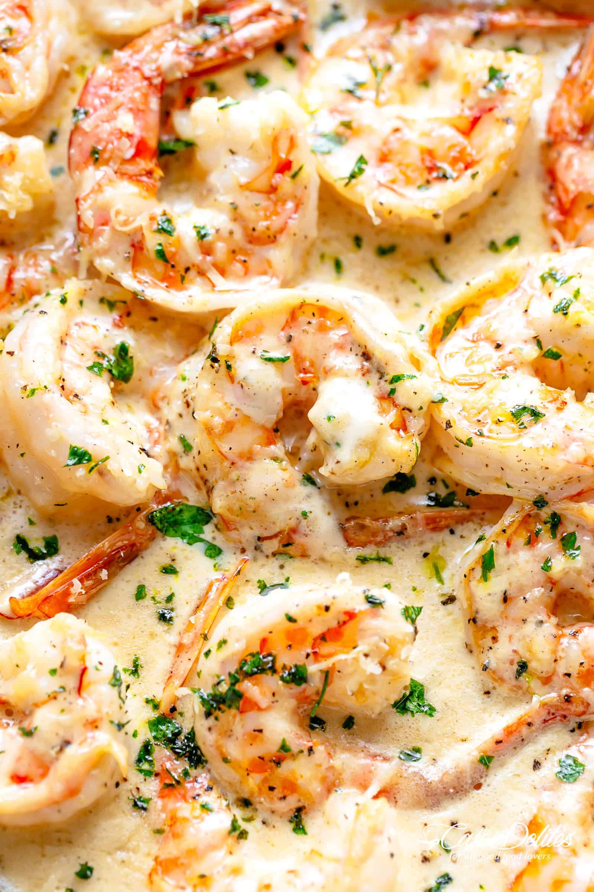

Creamy Garlic Shrimp

After publishing this Surf & Turf recipe yesterday, you guys have been requesting we post this shrimp recipe separately for easier printing and storing. Well, here it is!
Adapted from our popular Creamy Garlic Scallops recipe, this mouthwatering creamy shrimp goes with absolutely anything.
Ingredients
- 1 tablespoon olive oil
- 1 pound (500 grams) shrimp, tails on or off
- Salt and pepper, to taste
- 2 tablespoons unsalted butter
- 6 cloves garlic minced
- 1 1/2 cups reduced fat cream
- 1/2 cup fresh grated Parmesan cheese
- 2 tablespoons fresh chopped parsley
Instructions
- Heat oil a large skillet over medium-high heat. Season shrimp with salt and pepper and fry for 1-2 minutes on each side, until just cooked through and pink. Transfer to a bowl; set aside.
- Melt the butter in the same skillet. Sauté garlic until fragrant (about 30 seconds). Pour in the white wine or broth; allow to reduce to half while scraping any bits off of the bottom of the pan.
- Reduce heat to low-medium heat, add the cream and bring to a gentle simmer, while stirring occasionally. Season with salt and pepper to your taste.
- Add the parmesan cheese and allow sauce to gently simmer for a further minute or so until the cheese melts and sauce thickens.
- Add the shrimp back into the pan, sprinkle with parsley. Taste test sauce and adjust salt and pepper, if needed.
- Serve over pasta, rice or steamed veg.
*******************************
Got curious, want to know more recipes? Check below!